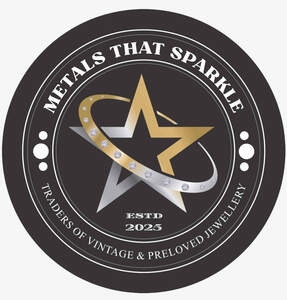

Trade Mark Journal No.2025/024 13 June 2025
UK00004208408 23 May 2025 (14,35,36,37,42)

- Class 14
- Jewellery; Necklaces [jewellery]; Brooches [jewellery]; Jewellery brooches; Pendants [jewellery]; Bracelets [jewellery]; Brooches [jewellery, jewelry (Am.)]; Ornaments [jewellery]; Amulets being jewellery; Amulets [jewellery]; Pearls [jewellery]; Trinkets [jewellery]; Necklaces [jewellery, jewelry (Am.)]; Fashion jewellery; Jewelry; Gold jewellery; Lockets [jewellery]; Jade [jewellery]; Brooches [jewelry]; Jewelry brooches; Brooches being jewelry; Clasps for jewellery; Charms [jewellery]; Charms for jewellery; Jewellery charms; Enamelled jewellery; Pearls [jewellery, jewelry (Am.)]; Items of jewellery; Ornaments [jewellery, jewelry (Am.)]; Jewellery items; Decorative brooches [jewellery]; Rings being jewellery; Rings [jewellery]; Trinkets [jewellery, jewelry (Am.)]; Bracelets [jewellery, jewelry (Am.)]; Amulets [jewellery, jewelry (Am.)]; Pewter jewellery; Jewellery stones; Cloisonné jewellery [jewelry (Am.)]; Wristlets [jewellery]; Cloisonné jewellery; Cloisonne jewellery; Charms [jewellery, jewelry (Am.)]; Lockets [jewellery, jewelry (Am.)]; Chains [jewellery, jewelry (Am.)]; Rings [jewellery, jewelry (Am.)]; Jewellery products; Ivory [jewellery, jewelry (Am.)]; Precious jewellery; Crucifixes as jewellery; Necklaces [jewelry]; Agate as jewellery; Pins [jewellery, jewelry (Am.)]; Jewellery chains; Chains [jewellery]; Jewellery in semi-precious metals; Medallions [jewellery, jewelry (Am.)]; Ivory jewellery; Jewellery chain; Jewellery caskets; Gold plated brooches [jewellery]; Pins [jewellery]; Pins being jewellery; Jewellery boxes; Amber pendants being jewellery; Jewellery for personal adornment; Pendants [jewelry]; Jewellery chain of precious metal for necklaces; Cabochons for making jewellery; Amberoid pendants being jewellery; Jewellery incorporating diamonds; Personal jewellery; Clips of silver [jewellery]; Jewellery findings; Sterling silver jewellery; Crosses [jewellery]; Bracelets [jewelry]; Jewellery incorporating pearls; Pearls [jewelry]; Amulets [jewelry]; Jewellery articles; Articles of jewellery; Jewellery made from gold; Jewellery made from silver; Wire of precious metal [jewellery, jewelry (Am.)]; Diamond jewelry; Jewellery chain of precious metal for anklets; Jewellery containing gold; Lockets [jewelry]; Clasps for jewelry; Jewellery in precious metals; Jewellery of precious metals; Jewellery chain of precious metal for bracelets; Trinkets [jewelry]; Threads of precious metal [jewellery, jewelry (Am.)]; Jewellery for personal wear; Jewellery cases; Charms [jewelry]; Jewelry charms; Charms for jewelry; Jewellery rope chain for necklaces; Gold bullion; Silver bullion; Gold bullion coins; Gold coins; Gold; Gold ingots; Gold thread [jewellery]; Silver ingots; Gold alloy ingots; Gold thread jewelry; Gold thread [jewelry]; Gold thread [jewellery, jewelry (Am.)]; Gold alloys; Silver thread [jewellery]; Chain mesh of precious metals [jewellery]; Gold chains; Wire of precious metal [jewellery]; Square gold chain; Jewellery coated with precious metals; Silver; Gold, unwrought or beaten; Gold rings; Objet d'art of enamelled gold; Silver objets d'art; Gold earrings; Jewellery plated with precious metals; Silver thread [jewellery, jewelry (Am.)]; Silver alloy ingots; Chains made of precious metals [jewellery]; Non-monetary coins; Ingots of precious metals; Gold and its alloys; Threads of precious metal [jewellery]; Jewellery boxes of precious metals; Coins; Wire of precious metal [jewelry]; Silver thread [jewelry]; Jewellery fashioned of precious metals; Watches made of gold; Spun silver [silver wire]; Jewellery made of crystal coated with precious metals; Ingots of precious metal; Gold base alloys; Articles of jewellery coated with precious metals; Collectable monetary coin sets; Platinum ingots.
- Class 35
- Retail services in relation to jewellery.
- Class 36
- Appraisal (Jewellery [jewelry Am.] -); Jewellery [jewelry (Am.)] appraisal; Jewellery appraisal.
- Class 37
- Polishing of jewellery; Jewellery repair; Repair of jewellery; Jewellery cleaning; Jewellery remounting; Remounting of jewellery.
- Class 42
- Designing of jewellery; Design of jewellery.
Bryan Robert Nicholas